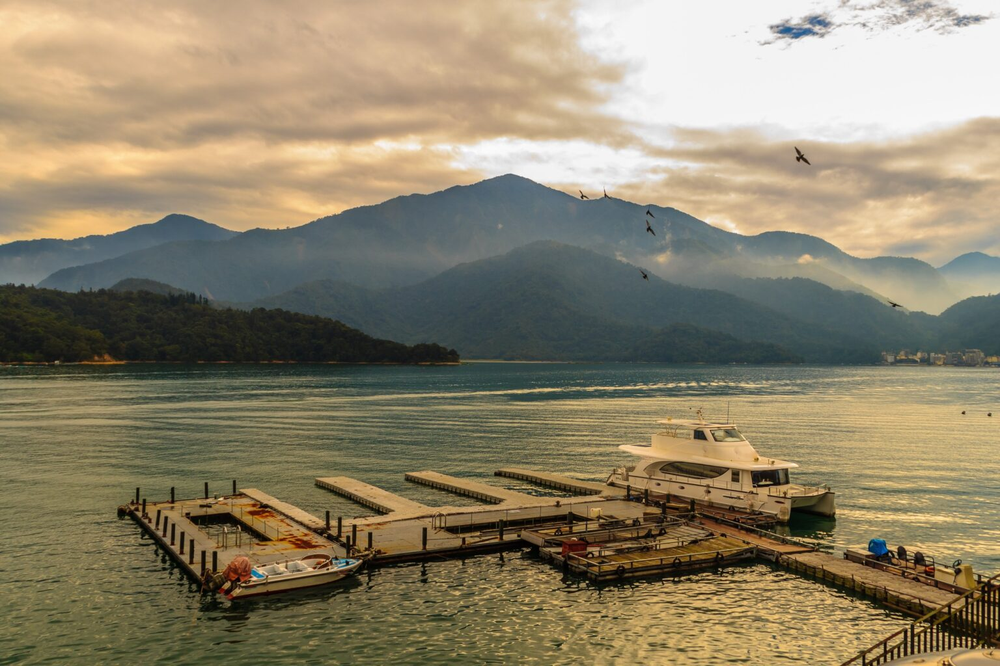
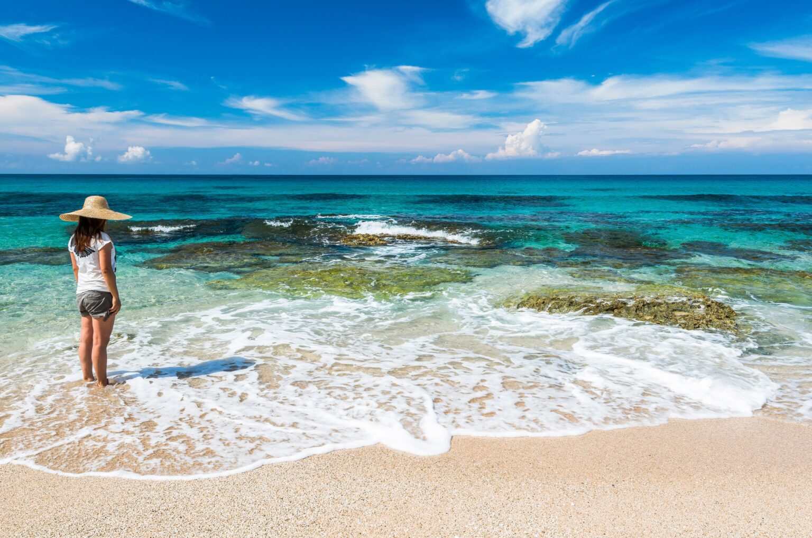
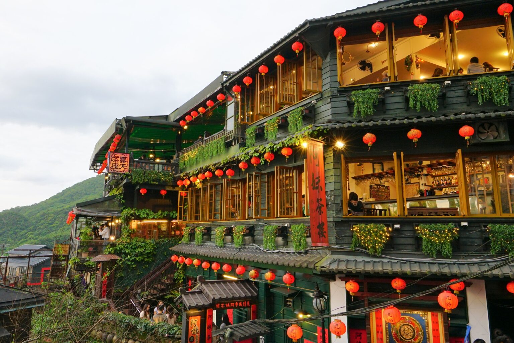

From sunrise on the mountains to sunset by the sea, every corner of Taiwan tells a different story. Here are five must-visit destinations you shouldn't miss.
| Day | Destination | Highlights |
|---|---|---|
| Day 1 | Taipei 101 | Observatory views, Xinyi district stroll, city nightscape |
| Day 2 | Jiufen Old Street | Lantern-lit lanes, street food, tea with sea views |
| Day 3 | Alishan | Sunrise above the sea of clouds, cypress forest walks |
| Day 4 | Sun Moon Lake | Boat tour, lakeside cycling, mountain reflections |
| Day 5 | Kenting National Park | Beaches, snorkeling / windsurfing, relaxed coastal vibe |
Want to explore more? Visit the official Taiwan Tourism Administration website.